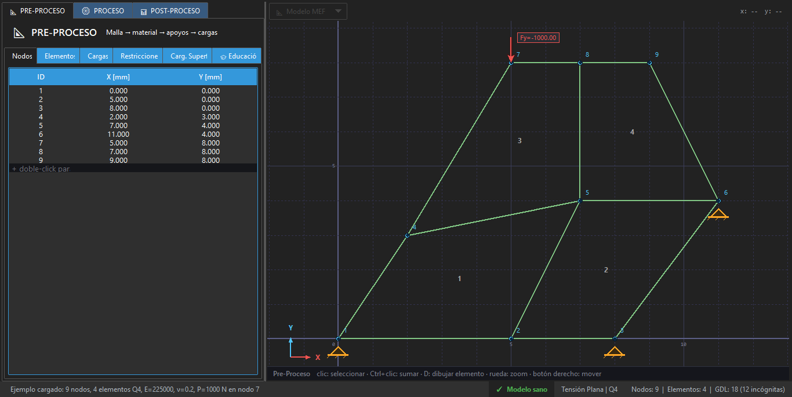
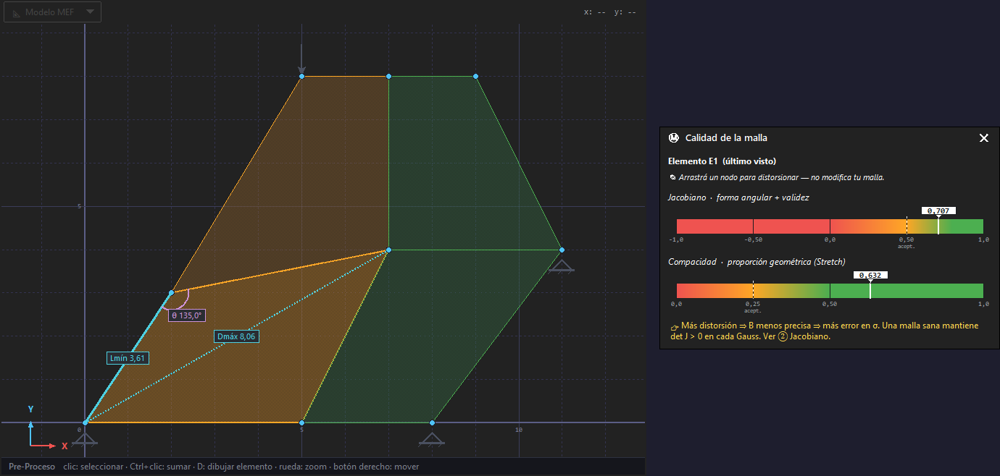
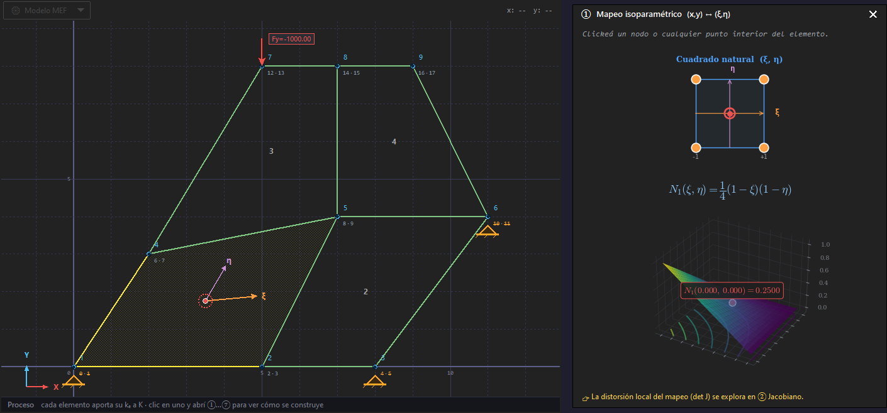
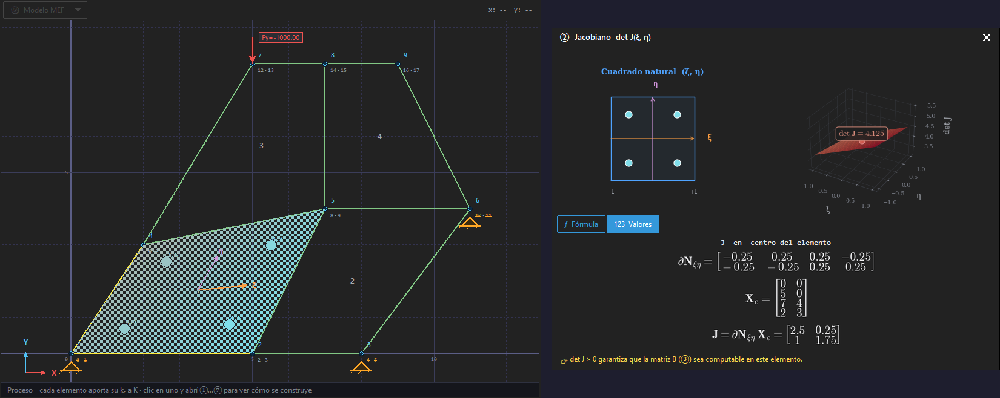
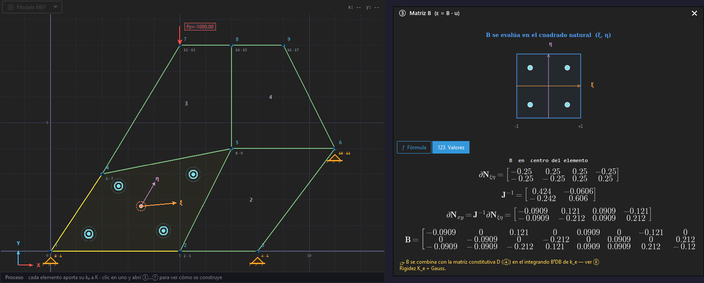
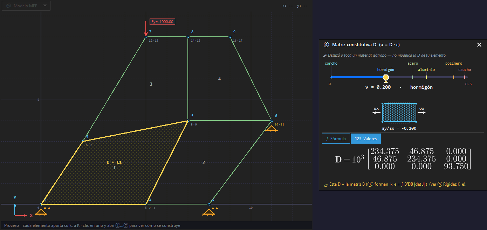
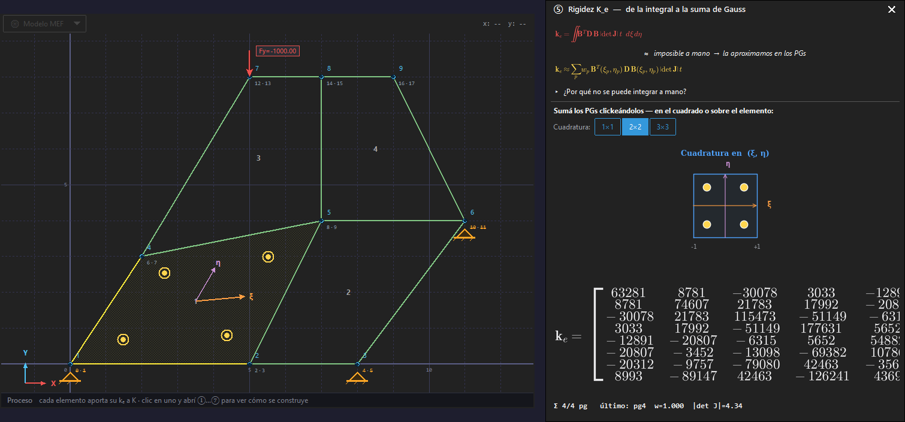
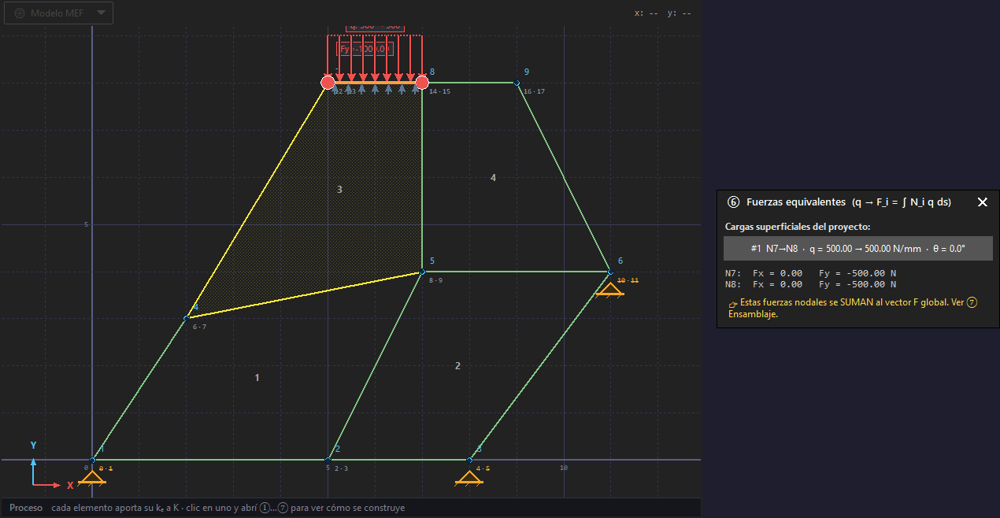
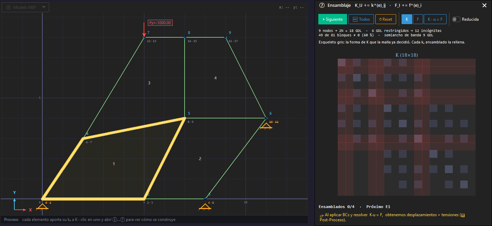
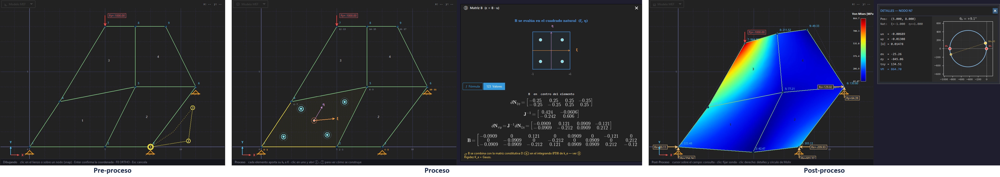

Facultad de Ingeniería · Carrera de Ingeniería Civil
Tesis de grado · Licenciatura en Ingeniería Civil
Desarrollo de software educativo de elementos finitos para el análisis estructural empleando el lenguaje de programación Python
PostulanteHedy Yhassmany Oyola Sucullani
Potosí – Bolivia · Septiembre de 2026
Membrana de Cook · von Mises · datos del motor
EduFEM
El procedimiento de cálculo, a la vista
01
Introducción
La situación problemática, el problema científico, el objeto y el campo, los objetivos, la hipótesis y el método.
Resultados sin procedimiento: la caja negra
ED-Elas2D, 1998 [6, p. 246]: con los programas comerciales, el estudiante queda limitado a introducir los datos del problema e interpretar los resultados, sin acceso a los detalles del análisis.
Consenso de 67 expertos [3, pp. 1159, 1168]: la formación tiende a privilegiar las destrezas de operación sobre los conceptos fundamentales, y reclama egresados que sepan planificar, verificar y validar sus análisis, no solo ejecutarlos.
Problema científico
¿De qué manera el uso del software de análisis estructural como caja negra podrá incidir en la baja trazabilidad y verificabilidad del análisis por el Método de los Elementos Finitos en elasticidad plana, en la Carrera de Ingeniería Civil de la Universidad Autónoma Tomás Frías, en la gestión 2026?
Causa · variable independienteLa forma en que el software expone el procedimiento de cálculo
Efecto · variable dependienteLa trazabilidad y la verificabilidad del análisis
↩
Trazabilidad
Cada resultado puede seguirse hacia atrás, etapa por etapa, hasta los datos del modelo, con todas las magnitudes intermedias a la vista.
✓
Verificabilidad
Cada magnitud puede comprobarse contra un patrón independiente —cálculo manual, solución analítica u otro programa— dentro de una tolerancia fijada de antemano.
Objeto de estudio y campo de acción
Objeto de estudio [8, p. 8]
El análisis de medios continuos en elasticidad lineal plana por el MEF
El procedimiento de cálculo que va del mapeo isoparamétrico a la recuperación de tensiones, con elementos cuadriláteros Q4 y Q9.
Campo de acción [8, p. 13]
Los medios de cálculo con que ese análisis se enseña en la Carrera
El software educativo que expone el procedimiento y la memoria de cálculo que lo documenta sobre el modelo del usuario.
Delimitación en cuatro planos
Disciplinar
Elasticidad lineal plana con Q4 y Q9
Institucional
Carrera de Ingeniería Civil, UATF
Espacial
El aula y la computadora personal, sin licencias
Temporal
Desarrollo, verificación y validación en la gestión 2026
Objetivo general
Qué
Desarrollar EduFEM, un software educativo de elementos finitos que expone el procedimiento de cálculo
Dominio
Elasticidad lineal bidimensional —tensión y deformación plana— con elementos isoparamétricos Q4 y Q9
Cómo
Diseño e implementación en Python; verificación y validación frente a soluciones analíticas, casos clásicos y un software comercial
Para qué
Que el análisis por el MEF resulte trazable y verificable paso a paso en la enseñanza de la Carrera de Ingeniería Civil de la UATF
Enunciado de la tesis
Desarrollar EduFEM, un software educativo de elementos finitos que expone el procedimiento de cálculo de problemas bidimensionales de elasticidad lineal (tensión y deformación plana) con elementos cuadriláteros isoparamétricos Q4 y Q9, mediante su diseño e implementación en el lenguaje de programación Python y su verificación y validación frente a soluciones analíticas, casos clásicos de la literatura y un software comercial, para que el análisis por el Método de los Elementos Finitos resulte trazable y verificable paso a paso en la enseñanza de la Carrera de Ingeniería Civil de la Universidad Autónoma Tomás Frías.
Cinco objetivos específicos, en escalera
1
Diagnosticar
los atributos de trazabilidad y verificabilidad que los recursos no ofrecen → requisitos
§ 1.1
2
Fundamentar
el MEF en elasticidad plana con Q4 y Q9, y los principios que orientan la exposición
Cap. 1
3
Desarrollar
el motor, la interfaz en tres fases sobre un lienzo, los módulos educativos y la memoria
§ 2.2
4
Verificar y validar
el motor: soluciones manufacturadas, Timoshenko y Cook, frente a soluciones analíticas y SAP2000
§ 3.2–3.5
5
Validar la propuesta
cobertura del procedimiento y del contenido, y verificación, contra criterios fijados de antemano
§ 3.6–3.8
Hipótesis y preguntas de investigación
El desarrollo de EduFEM permitirá mejorar la forma en que el software expone el procedimiento de cálculo —de caja negra a procedimiento a la vista—, elevando la trazabilidad y la verificabilidad del análisis por el MEF en elasticidad plana en la Carrera de Ingeniería Civil de la UATF.
Variable independiente
Forma en que el software expone el procedimiento
Caja negra → procedimiento a la vista
EduFEMinterviniente
Variable dependiente
Trazabilidad y verificabilidad del análisis
Se miden sobre el software y los casos de estudio
a
Trazabilidad
Cada etapa expuesta sobre el modelo del usuario; tres fases sobre un mismo lienzo; el contenido que exigen los expertos, cubierto.
PI-1. ¿Qué organización de la interfaz, los módulos y la memoria permite seguir cada resultado hasta sus datos y cubre el contenido exigido?
b
Verificabilidad
El motor coincide, dentro de tolerancias fijadas, con soluciones exactas, Timoshenko, SAP2000 y Cook; reproduce el bloqueo por cortante; la memoria puede rehacerse a mano.
PI-2. ¿Reproduce el motor, dentro de tolerancias fijadas de antemano, las referencias externas y los fenómenos numéricos que predice la teoría?
⚖Es refutable: la refutaría una etapa sin exposición, un contenido sin instrumento, una tasa fuera de margen o un error sobre el umbral.
Investigación tecnológica: ciencia del diseño
Finalidad
Propositiva
Naturaleza [7, p. 91]
Investigación tecnológica
Enfoque [24, p. 6]
Cuantitativo
Nivel
Descriptivo y comparativo
Las seis actividades del método [12, pp. 52–56] en esta tesis
1
Identificar el problema
Caja negra: el análisis no puede seguirse ni comprobarse
OE1
2
Definir los objetivos
Cinco requisitos de la herramienta
OE3
3
Diseñar y desarrollar
Motor, interfaz, módulos y memoria (base: OE2)
OE4
4
Demostrar
Ejemplo canónico y tres casos de estudio
OE4-5
5
Evaluar
Criterios fijados de antemano y veredicto
6
Comunicar
Este documento, el repositorio y el instalador
⚙El conocimiento se obtiene construyendo el producto y evaluándolo con rigor [11, p. 75]: una validación de laboratorio [25, pp. 30–31].
02
Base teórica
El estado del arte y la brecha, los principios que orientan la exposición y los fundamentos del MEF que el motor implementa.
Ningún recurso revisado reúne los ocho atributos
ED-Elas2D[6] · 1998
Analizador de cerchas[16]
VisualFEAsimuladores [17, 18]
BibliotecasCALFEM, FEniCS
Software comercialSAP2000 [19], ANSYS
EduFEMesta tesis
1 · Interfaz en español
No consta (capturas en castellano)
Inglés
Inglés
Inglés
Inglés (localización parcial)
Español
2 · Libre y código abierto
No consta
No declarada (código MATLAB)
Comercial
Libre
Comercial
Libre, código abierto
3 · Continuo elástico plano
2D · triángulos y Q4/Q8/Q9
Barras (cercha)
Continuo, placas, sólidos
Diversos
Amplios
2D · Q4 y Q9
4 · Paso a paso sobre el modelo
Media (pre / proc / post)
Media-alta (código)
Media-alta, un eslabón
En el código, sin guía visual
Baja (caja negra)
Alta: 8 módulos
5 · Procedimiento completo
Sí
Parcial (solo barras)
Parcial (un eslabón)
Parcial (programando)
No (no didáctico)
Sí
6 · Memoria de cálculo
No consta
No consta
Valores en pantalla, no documento
No (la programa el usuario)
Informes sin desarrollo matricial
PDF con sustitución numérica
7 · Fenómenos numéricos
No consta
No consta
Modos espurios y bloqueo
Programando, sin guía
Sin exposición didáctica
det J, espurios, bloqueo
8 · Verificación y validación publicada
No consta
No consta
No consta
—
—
MMS, Timoshenko, Cook
«No consta»: la publicación no documenta el atributo (no implica que falte). Raya: atributo no evaluado en las categorías de propósito general.
Del diagnóstico a cinco requisitos
1
El procedimiento de cálculo completo, a la vista sobre el modelo del usuario
Trazabilidad
2
Una memoria de cálculo reproducible a mano
Trazabilidad
3
Exactitud verificada y validada, publicada junto con la herramienta
Verificabilidad
4
La cobertura del contenido que los expertos exigen
Trazabilidad del contenido
5
Software libre y en español
Las pone al alcance de la Carrera
→Es la misma lista que el Capítulo 3 contrasta, uno por uno, contra criterios fijados de antemano.
Cuatro principios orientan cómo se expone el cálculo
Principio (fuente)
Decisión de diseño en EduFEM
Evidencia comprobable
Visibilidad del procedimientoLee [17, p. 157]
Módulos M1–M7 exponen cada matriz sobre el elemento seleccionado; la memoria sustituye las nueve etapas
7 de 7 etapas con módulo y 9 de 9 en la memoria (§ 3.6.1)
Interactividad con vínculo al modeloLee [17, pp. 163, 166]
Capa superpuesta sobre la malla real; conmutador fórmula ↔ valores; conversión Q4 ↔ Q9
Figuras 2.4 y 3.5; Cook Q4 frente a Q9 (Tabla 3.4)
Construcción paso a pasoBishay [16, pp. 4–5, 17]
Un módulo por etapa, en el orden del método; memoria sobre el modelo propio
Tabla 2.8; § 2.2.9; Anexo G
Conexión fundamento–operaciónPérez-Santiago y Campos [3, pp. 1159, 1168]
Comprobador de salud con explicación; equilibrio y condicionamiento en la memoria; V&V publicada
FEA32–FEA34 cubiertos (Tabla 3.7)
Describen propiedades del software, no efectos sobre quien lo usa: ese efecto no se mide en esta tesis.
Del pórtico al continuo: la misma ecuación
Forma fuerte
→
Trabajos virtuales (forma débil)
→
Sistema global
Tensión plana y deformación plana
Animación que EduFEM muestra en Modelo → Tipo de análisis (generada con Manim y distribuida con EduFEM).
Tensión plana · σz = 0 · chapas delgadas
Deformación plana · εz = 0 · presas, muros, túneles
Si ν → 0,5, el factor (1 − 2ν) → 0: bloqueo volumétrico (§ 1.9), que el módulo M4 advierte.
El procedimiento de cálculo en nueve etapas
Mapeo isoparamétrico: del cuadrado al elemento
Jacobiano y matriz B: el puente entre los dos espacios
Rigidez elemental por cuadratura de Gauss
Bloqueo por cortante: el Q4 no puede curvarse
Flexión pura u = κxy, v = −½κx²: animación que EduFEM muestra en Modelo → Tipo de elemento.
Q4 bilineal: sus bordes quedan rectos; para acomodar la flexión desarrolla corte espurio que absorbe energía [2, pp. 98–99].
Resultado: rigidez excesiva, flecha subestimada y convergencia lenta al refinar.
Q9 bicuadrático: reproduce el modo de curvatura; está prácticamente libre de este bloqueo [14, p. 243].
EduFEM no lo corrige: lo deja a la vista. La membrana de Cook lo cuantifica (§ 3.5).
Tensiones: de los puntos de Gauss a los nodos
Verificación y validación: dos preguntas distintas
Verificación [21, pp. 13–14]
¿Se resuelven bien las ecuaciones?
Soluciones manufacturadas: se elige un campo exacto, se deduce la carga que lo produce y se mide el error del software.
Validación, en esta tesis
¿Coinciden con referencias externas?
Contraste con una solución analítica y con un modelo comercial de exactitud conocida; no con ensayos físicos.
03
Diseño y desarrollo del modelo
El modelo de investigación —variables, casos y criterios fijados de antemano— y el software que lo materializa.
Modelo de investigación: simulación numérica
Factores
Tipo de elemento Q4 · Q9
Densidad de malla N = 2 … 32
→
Objeto de arquitectura conocida
Motor de EduFEM determinista: la misma entrada da la misma salida
Controlados: tipo de análisis · orden de cuadratura
→
Respuesta
Exactitud errores y tasas de convergencia
La respuesta se explica por los mecanismos del método: el orden de interpolación y el bloqueo por cortante. Es un experimento de causa y efecto sin sujetos [25, p. 247].
Cuatro de las cinco familias de evaluación [11, p. 86]
Analítica
Inventario de lo que el software expone; medición de tiempos
Experimental
Simulación con datos construidos: soluciones manufacturadas
Pruebas
Timoshenko, Cook, SAP2000 y la batería de regresión
Descriptiva
El ejemplo canónico resuelto paso a paso (Anexo G)
La quinta, la observacional, estudia el uso dentro de una organización: no corresponde a métricas de cobertura y exactitud. Es una validación de laboratorio [25, pp. 30–31].
Variables e indicadores: todo se mide sobre el software
Independiente · forma de exponer el procedimiento
Magnitudes intermedias visibles en cada etapa
Operación sobre el modelo del usuario en las tres fases
Memoria de cálculo con sustitución numérica
Caja negraProcedimiento a la vista
Dependiente · trazabilidad
Etapas con módulo (de 7) y con desarrollo en la memoria (de 9)
Fases que comparten el lienzo (de 3)
Ítems de contenido con instrumento (de 18)
Intercambio de datos sin pérdida
Dependiente · verificabilidad
Tasa de convergencia observada frente a la teórica
Error de la flecha y de σx frente a la analítica y a SAP2000
Residuo de equilibrio; error en Cook y firma del bloqueo
Etapas de la memoria remitidas a su ecuación
◆Interviniente: EduFEM 1.0.0 (revisión 91e3df0, 16 de septiembre de 2026), la versión que distribuye el instalador.
Matriz de consistencia · clic en una fila para ver su evidencia
Objetivo específico
PI
Variable / indicador
Método / instrumento
Evidencia
1. Diagnosticar los atributos que los recursos no ofrecen
PI-1 y 2
Atributos ausentes → requisitos
Revisión del estado del arte
§ 1.1 · Tabla 1.1 →
2. Fundamentar el MEF y los principios de la exposición
↺Una sola formulación del problema: la Introducción la plantea, la § 2.1.3 la retoma y la § 3.8 la responde.
Tres casos de estudio, elegidos por su valor probatorio
Población: los problemas de elasticidad plana resolubles con cuadriláteros. Muestra dirigida: cada caso ejercita términos distintos del modelo [21].
Criterios de aceptación, fijados antes de medir
Seis capas en torno a un solo modelo de proyecto
Motor: identidad ≠ índice y matriz dispersa
Pre-proceso: un lienzo, cinco tablas y un comprobador

1
2
3
4
1
Cinco tablas: nodos, elementos, cargas, restricciones y cargas superficialesedición por doble clic; copiar y pegar desde una planilla
2
Lienzo con dibujo tipo CADanclaje a nodos, orientación antihoraria forzada, nivel de detalle por acercamiento
3
Comprobador de saluderrores que bloquean, advertencias, corrección automática y explicación
4
Selección sincronizada tabla ↔ lienzoy deshacer/rehacer por instantáneas del modelo completo
+
Importación DXF repetiblecapa FEM_ELEMENTS; reimportar no duplica
Ocho módulos, sobre el elemento que el usuario elige

M0Calidad de mallaPre-proceso · distorsión en vivo

M1Mapeo isoparamétricoEtapa 1 · funciones de forma

M2JacobianoEtapa 2 · det J y distorsión

M3Matriz BEtapa 3 · deformación

M4Matriz constitutiva DEtapa 4 · advierte ν → 0,5

M5Rigidez ke + GaussEtapa 5 · puntos de Gauss variables

M6Fuerzas equivalentesEtapa 6 · carga distribuida

M7EnsamblajeEtapa 7 · K y F globales
◆Cada módulo usa las mismas funciones del motor: lo que se muestra es, por construcción, lo que se calcula.
Ensamblaje: cada elemento entra en su lugar de K
Post-proceso: la respuesta y sus comprobaciones
Memoria de cálculo: el procedimiento, en papel
Trazabilidad en acción: de una tensión a los datos
Demostración en vivo con EduFEM
Cargar el ejemplo canónicoAyuda ▸ Cargar ejemplo (Ctrl+E) · 9 nodos, 4 Q4, P = 1000
Comprobar la salud y resolverF5 · el comprobador revisa antes de ensamblar
Abrir M3 y M7 sobre E3fórmula ↔ valores; filas y columnas de K
Sonda en el nodo 7crudo y suavizado; círculo de Mohr; reacciones
Generar la memoria de cálculoPDF con las nueve etapas, sin internet
Si el equipo de la sala no tiene EduFEM
Estos laboratorios de la presentación usan la salida real del motor:
Instalación
EduFEM-Setup.exe · por usuario, sin permisos de administrador, con TeX Live embebido (Anexo A)
04
Presentación de resultados
La verificación, la consistencia interna, las dos validaciones externas y la cobertura del procedimiento y del contenido.
Verificación: el error cae con la tasa que predice la teoría
Consistencia interna: el modelo no deriva
Viga de Timoshenko: analítica, SAP2000 y EduFEM
Membrana de Cook: el bloqueo del Q4, a la vista
Cobertura del procedimiento: las nueve etapas, a la vista
7de 7
etapas con módulo educativo (M1–M7)
9de 9
etapas desarrolladas en la memoria de cálculo
3de 3
fases del análisis sobre un mismo lienzo
Ambas
solución y tensiones, en modo crudo y suavizado

Pre-proceso, proceso (M3 sobre el elemento seleccionado) y post-proceso (von Mises, reacciones y círculo de Mohr del nodo 7): el mismo lienzo y el mismo modelo.
7 de 7 · se cumple9 de 9 · se cumple3 de 3 · se cumplecrudo y suavizado · se cumple
Cobertura de contenido: lo que 67 expertos exigen
05
Análisis de resultados
Qué dicen los resultados, qué no dicen, una lección sobre el límite de la propia batería y el contraste de la hipótesis.
Con 578 GDL, el error del Q9 es más de diez veces menor
Lo que las tasas no vieron, la memoria lo delató
33 282 GDL en alrededor de un segundo
Qué dicen los resultados, y qué no dicen
Alcances
La batería respalda la exactitud del núcleo numérico
Flecha: 0,26 % frente a la solución con cortante y 1,85 % frente a Euler-Bernoulli: el modelo 2D capta el cortante
Componentes secundarias: 6 a 35 veces menores que σx; su error relativo crece por escala
Frente a otras herramientas
No compite en tipologías, escalabilidad ni productividad
Su valor: el cálculo expuesto y la memoria que lo reconstruye sobre el modelo del usuario
SAP2000 no es el patrón: en τxy queda más cerca de la analítica (0,16 %) que EduFEM
Limitaciones observadas
El Q4 bloquea: se muestra, no se corrige
ν → 0,5 en deformación plana: M4 lo advierte, no lo resuelve
Deformación plana sin contraste externo; sin caso con carga linealmente variable
Contraste de la hipótesis: criterio por criterio
06
Conclusiones y recomendaciones
Un objetivo, una conclusión; la respuesta al problema, los aportes, las limitaciones y el trabajo futuro.
Cinco objetivos, cinco conclusiones
1
Diagnosticar
Ninguno de los recursos revisados reúne los ocho atributos → cinco requisitos
2
Fundamentar
Una base común para motor, módulos y memoria; cuatro principios
3
Desarrollar
Nueve etapas; tres fases en un lienzo; ocho módulos; memoria en PDF
4
Verificar y validar
Tasas teóricas; σx 0,04 % y flecha 0,26 %; diferencia con SAP2000 0,21 %; Cook: el Q4 bloquea
5
Validar la propuesta
7/7 · 9/9 · 3/3 · 18/18: los 15 criterios fijados de antemano se cumplen
La hipótesis queda comprobada en sus dos cláusulas
De caja negra…
…a procedimiento a la vista
EduFEM expone las nueve etapas sobre el modelo del usuario
EduFEM1.0.0
Trazable y verificable
(a) 6 de 6 · (b) 9 de 9
con criterios fijados de antemano, dentro del alcance declarado
La respuesta es de orden técnico: la incidencia está en el medio de cálculo. Un software que solo muestra datos y resultados deja un análisis que no puede seguirse ni comprobarse; uno que expone el procedimiento permite ambas cosas.
⚖Lo medido son propiedades del software y de sus resultados; queda fuera de lo medido qué ocurre cuando se pone en manos de un curso.
Lo que queda en la base de conocimiento
1 · El software
EduFEM, libre, en español y verificado
Motor verificado por soluciones manufacturadas y contrastado con dos referencias externas; interfaz de modelado; módulos sobre el modelo real.
2 · Conocimiento de diseño
Tres decisiones reutilizables
Módulos sobre el elemento que el usuario elige · memoria generada con las mismas funciones del motor · versión legible junto al motor rápido, como patrón de comparación de las pruebas.
3 · Conocimiento de evaluación
Una batería reproducible
Guiones y datos de V&V; la lección sobre el límite de las tasas; la tabla de cobertura de contenido sobre un consenso publicado.
Limitaciones, declaradas
La evaluación la hizo el autor, con la batería automática; sin revisión independiente del código.
La cobertura es un cotejo del autor sobre un consenso publicado de expertos mexicanos de ingeniería mecánica [3, p. 1171].
La exposición es una posibilidad, no una obligación: el software no fuerza el recorrido.
Los módulos llegan al ensamblaje; solución y tensiones se exponen en el post-proceso y la memoria.
Q4 bloquea y ν → 0,5 degenera D en deformación plana: se muestran, no se corrigen.
Deformación plana sin contraste externo; Timoshenko solo con Q9; sin caso con carga linealmente variable.
Tres líneas de continuación, una por capítulo
Formulación · Cap. 1
Integración reducida selectiva y B̄ contra el bloqueo, con un módulo que compare bloqueado y corregido
Triángulos y cuadriláteros de ocho nodos
Software · Cap. 2
Mallado automático con M0 como control
Cholesky y solucionador iterativo
Guía de prácticas para la cátedra; extensión a 3D
Evidencia · Cap. 3
Caso con carga linealmente variable y un caso civil en deformación plana con peso propio
Revisión independiente del código y de la tabla de cobertura
→Una línea distinta, de carácter educativo, podrá estudiar el uso de la herramienta en el aula.
Gracias
Del resultado a sus datos, etapa por etapa: un análisis por el MEF que puede seguirse y comprobarse.
◆ Trazable: 7/7 · 9/9 · 3/3 · 18/18✓ Verificable: 9 de 9 criterios↺ Reproducible: guiones, datos e instalador
github.com/Sucullani/SoftwareED
RRespaldo· Anexo G
¿Se puede rehacer a mano? El Jacobiano de E3
RRespaldo· § 3.4 · tests/vv_timoshenko.py
Viga de Timoshenko: apoyos, carga y equilibrio
Apoyos (en el eje neutro, y = 0)
Fijo en x = −7 m: restringe u y v · móvil en x = +7 m: restringe v.
Carga
q = 5000 kgf/m como carga superficial sobre la arista superior, convertida a fuerzas nodales equivalentes con la formulación de la § 1.10.
Prueba de que la carga entró bien
ΣRy = qL = 70 000 kgf con residuo relativo 1,7 × 10⁻¹³; ΣRx = 0 a precisión de máquina.
Malla y material
Q9 56 × 8 (448 elementos, 1921 nodos, 3842 GDL) · E = 217 370 kgf/cm², ν = 0,20 · b = 0,40 m
Puntos de control
A (0; 0,6), B (−4,5; −0,3), C (−3,5; −0,2) m, alejados de los apoyos puntuales.
SAP2000
Modelo de cáscara Mindlin-Reissner (Anexo E): una segunda aproximación numérica, no el patrón de exactitud.
RRespaldo· § 2.1.6 · Tabla 2.4
Umbrales fijados antes de medir, y el margen observado
RRespaldo· § 2.1.1 · Conclusiones
«Educativo» califica el propósito de diseño del software
Es una propiedad del producto: exponer el procedimiento además de entregar el resultado, verificable en el software.
La evaluación es una validación de laboratorio [25, pp. 30–31]: escenarios controlados, sin sujetos.
La tesis no afirma que el estudiante aprenda o comprenda mejor; las fuentes que lo reportan evaluaron otras herramientas.
Medir el efecto en un curso es otra investigación, de carácter educativo, y queda recomendada.
RRespaldo· Repositorio (archivo LICENSE) · nota de la Tabla 2.5
Licencia: código MIT, dependencias libres
Código de EduFEM · archivo LICENSE
MIT
Repositorio público: la Carrera puede usarlo, modificarlo y redistribuirlo.
Paquete binario
+ AGPL-3.0 de PyMuPDF
Solo muestra los PDF de teoría dentro de EduFEM; la nota de la Tabla 2.5 advierte que condiciona la redistribución del conjunto.
✓Ninguna dependencia exige pago ni licencia comercial al estudiante: es lo que pide el requisito 5.
RRespaldo· § 3.2 · Anexo D · tests/test_vv_extensions.py